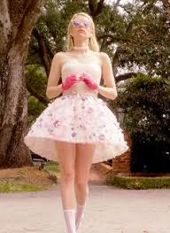

Historia:
Chanel Oberlin es introducida como la presidenta de la hermandad Kappa Kappa Tau (KKT) en la ficticia Wallace University. Conocida por autodenominarse Chanel #1, lidera a un grupo de subordinadas denominadas “Las Chanels”, a quienes etiqueta numéricamente porque no recuerda ni conoce sus nombres reales. Su objetivo principal es mantener su posición de poder dentro de la sororidad y conservar su popularidad a toda costa.
Durante la primera temporada, Chanel se enfrenta a la decisión de la decana Cathy Munsch de abrir la hermandad a cualquier estudiante, lo cual amenaza su control sobre KKT. Al mismo tiempo, un asesino en serie conocido como el “Diablo Rojo” comienza a atacar a los miembros del campus, forzándola a lidiar con situaciones que ponen en riesgo su reinado y su supervivencia.
En la segunda temporada, la historia continúa con Chanel fuera de la universidad y luego involucrada en otros entornos donde nuevamente se encuentra en medio de crímenes y caos, mostrando su habilidad para manipular situaciones y personas para su propio beneficio.

Wiki oficial y mejor estructurada de chanel aqui
Momentos iconicos y caracteristicas de Chanel Oberlin:
Top 5 momentos iconicos de Chanel Oberlin:
- Cuando juega a la ouija con las demas chanels.
- La introccion que hace en el primer episodio.
- El discurso que da a los reporteros/manifestantes en su contra.
- Cuando confiesa que le escupio al cafe de Grace.
- Su regreso en la segunda temporada.
Caracteristicas de Chanel Oberlin:
- Complejo de "abeja reina".
- Crueldad sin perder lo elegante.
- Buena manipulando a las personas.
- Gran sentido de la moda.
- Su gran odio hacia Chanel #5.
- Estaba acostumbrada a comer algodon de almuerzo
Ficha técnica
| Datos generales | Chanel |
|---|---|
| Edad | 20-21 años |
| Peso | 112,5 libras |
| Estatura | 1,57 m |
| Primera aparicion | Primer episodio de Scream Queens |
| Debilidades | Inseguridad, No conseguir lo que quiere |
| Alias | Chanel #1,Mamá y C |
| Interpretado por | Emma Roberts |
| Puntos fuertes | Feminista, rica y manipuladora |
Registro de fans
Registro de club de fans de Chanel
Galería
Seccion de fotos iconicas y fan arts de Chanel Oberlin: